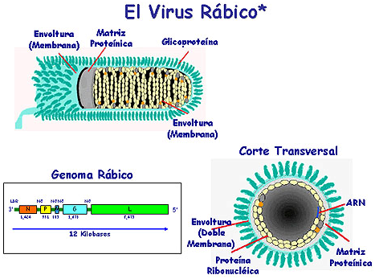

Etiología
El virus ràbic té forma de bala, és de genoma ARN i pertany al gènere Lyssavirus, família Rhabdoviridae. Té dos antígens principals: un intern de naturalesa nucleoproteínica que és grupoespecífico, i l'altre de superfície que és de composició glucoproteínica i responsable dels anticossos neutralitzadors. El virus ràbic "clàssic" i els virus amb morfologia similar als ràbics aïllats últimament en Africa tenen en comú l'antigen grup específic, és a dir l'antigen intern nucleoproteínico. Sobre la base d'aquest fet s'ha proposat formar el gènere Lyssavirus dins dels rabovirus.
